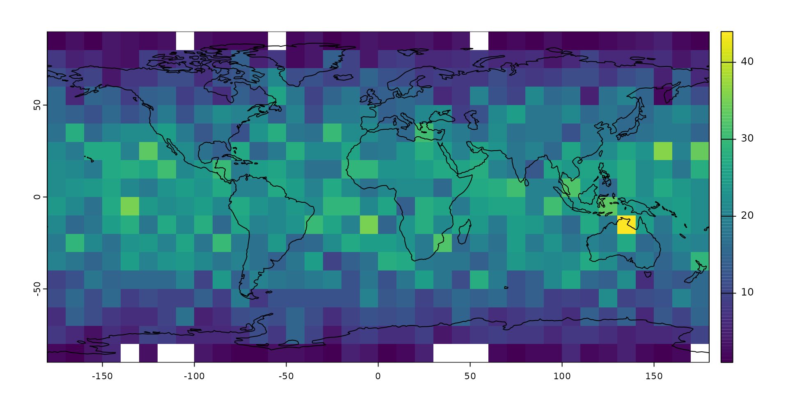
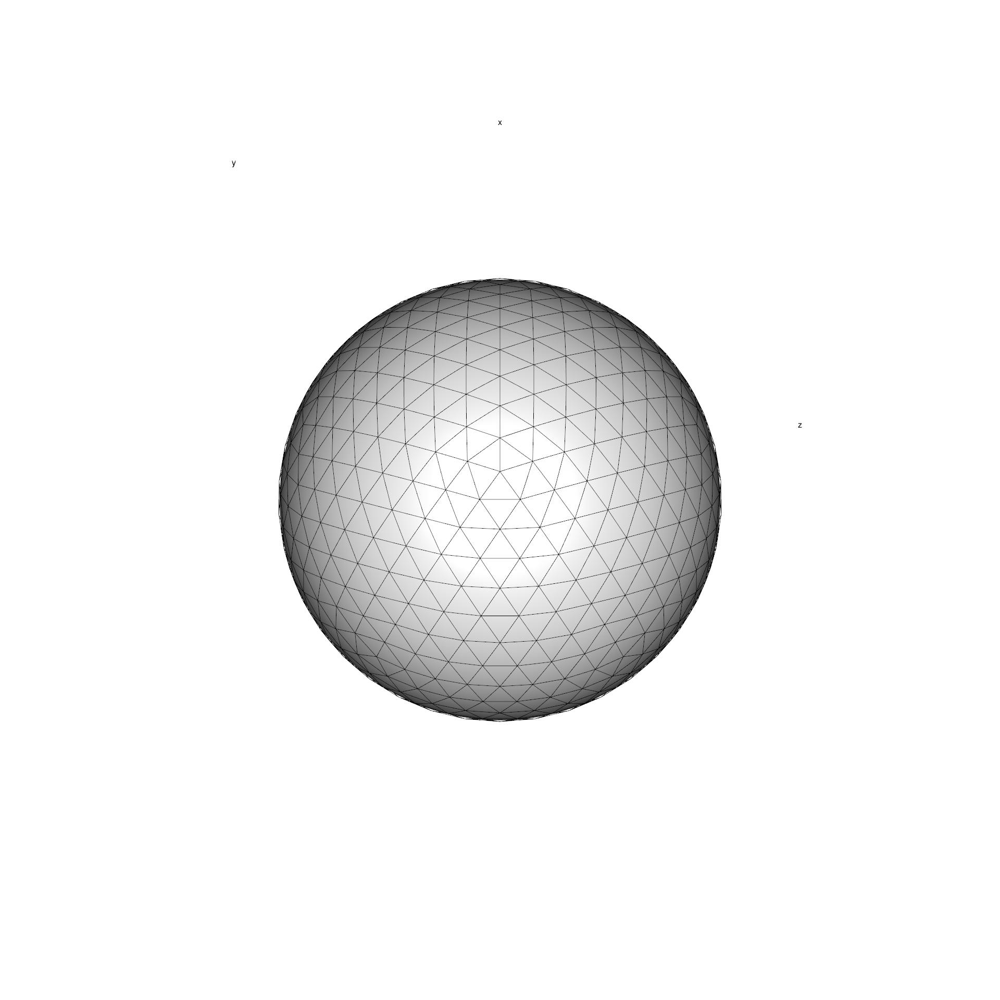

Introduction
The purpose of this tutorial is to demonstrate the basic usage of the icosa package. The primary targeted application of the package is in global biological sciences (e.g. in macroecological, biogeographical analyses), but other fields might find the structures and procedures relevant, given that they operate with point vector data and variables that depend on the density of such data.
Note that this is just a brief introduction to the package’s capabilities. The complete documentation of the package and the rest of the tutorials will be made available on the package website. Relevant how-to guides will be posted on the evolv-ED blog (https://www.evolv-ed.net/).
Point Data
The primary problem with ecological samples is that due to density and uniformity issues, the data points are to be aggregated to distinct units. As coordinate recording is very efficient on the 2d surface of a polar coordinate system (i.e. latiude and longitude data), this was primarly achieved by rectangular gridding of the surface (for instance 1° times 1° grid cells). Unfortunately, this method suffers from systematic biasing effects: as the poles are approached, the cells become smaller in area, and come closer to each other.
Random points on the sphere
We can illustrate this problem by generating random points and assign them to different spatial bins. The icosa package has a utility function to generate such points:
The function rpsphere() generates randomly distributed points on the surface of a sphere.
# set seed for exact reproducibility
set.seed(0)
# 10000 random points
randPoints <- rpsphere(10000, output="polar")
# the first 6 points
head(randPoints)## long lat
## [1,] -43.998368 -16.764084
## [2,] -105.191289 6.095493
## [3,] -20.456553 -10.867072
## [4,] 3.011043 26.776595
## [5,] -7.820389 67.246328
## [6,] 170.576713 -35.169054Land Polygons
You can visualize this pointset and plot them on a map, with some example data, such as the land polygons from Natural Earth - which are included in the package. You can load and plot such vector data with the sf package. You can install it from the CRAN with the regular install.packages()
## Linking to GEOS 3.8.0, GDAL 3.0.4, PROJ 6.3.1; sf_use_s2() is TRUEOnce the package is loaded, you can load the data with sf::st_read():
# reading in example data
ne <- sf::st_read(file.path(system.file(package="icosa"), "extdata/ne_110m_land.shx"))## Reading layer `ne_110m_land' from data source
## `/usr/local/lib/R/site-library/icosa/extdata/ne_110m_land.shx'
## using driver `ESRI Shapefile'
## Simple feature collection with 127 features and 3 fields
## Geometry type: POLYGON
## Dimension: XY
## Bounding box: xmin: -180 ymin: -90 xmax: 180 ymax: 83.64513
## Geodetic CRS: WGS 84
# plotting the world map
plot(ne$geometry, col="gray", border=NA)
# plotting the point cloud
points(randPoints, col="#FF000055", pch=3)
Note that the points appear to have a non-random distribution: they seem to have higher density in lower-latitude areas. But this is in fact a distorting effect of not the points, but the equirectangular map projection itself! The points are are created with 3D normal distributions and then they are projected to the surface of the sphere around the center of this distribution.
Binning with a Gaussian (UV)-grid
Let’s count these data points in a simple longitude-latitude (Gaussian, polar, or UV) grid, which you can easilly implement with the terra package (i.e. raster)! Similar to sf this package can be installed from the CRAN with install.packages()
Let’s make a 10x10° raster grid, and count the number of points in every cell:
# a 10-degree resolution grid
r <- rast(res=10)
# count the number of points in raster cells
counts <- rasterize(randPoints,r, fun=length)
counts## class : SpatRaster
## dimensions : 18, 36, 1 (nrow, ncol, nlyr)
## resolution : 10, 10 (x, y)
## extent : -180, 180, -90, 90 (xmin, xmax, ymin, ymax)
## coord. ref. : lon/lat WGS 84
## source(s) : memory
## name : lyr.1
## min value : 1
## max value : 44The counts of these points can be easilly visualized with a plot.
# the raster itself
plot(counts)
# plotting the map on plot
plot(ne$geometry, col=NA, border="black", add=TRUE)
The point counts have a similar latitudinal pattern as we saw with their distribution: as latitude increases, the cell sizes decrease and the expected number of points in them decreases.0
One solution to this problem can be the use of a different projection. For instance the Lambert’s Cylindrical Equal Area projection (["EPSG:54034"](https://epsg.io/54034)) can be used instead of the Equirectangular projection. This will, however distort the polar cells that will become more and more elongated with higher the latitude values - which might be a problem, or might not.
About icosahedral grids
The icosa package approaches this problem by not using a rectangular grid, i.e. a grid that has cells that are rectangular shape.
Instead, icosa relies on the tessellation of a regular icosahedron to a given resolution. This procedure ends up with a polyhedral object of triangular faces of higly isometric properties: very similar shapes of cells which are roughly equally distanced, and similar in cell area. Such bodies are often called icospheres.
Here is how such grid looks like in 3D (also plotted with icosa, see a later tutorial for such plotting):

Still, triangular grids are somewhat unintuitive, because distances between the cell can vary considerably: the corner of a cell is much farther away from the center than the side. For this reason, we usually use the inverted versions of these grids: the triangle cell-midpoints become the corners of the cells (i.e. vertices), which defines a grid where cells are hexagonal - with exactly 12 pentagons (where the vertices of the icosahedron used to be). This is the inverted version of the grid above:
Creating an icosahedral grid
Once icosa is loaded, you can create such a penta-hexagonal grid with a single line of code, using the hexagrid() function:
# create a trigrid class object
hexa <- hexagrid(deg=5, sf=TRUE)## Selecting hexagrid with tessellation vector: c(2, 4).
## Mean edge length: 4.993 degrees.The argument
degrefers to the expected length of the edge length of the grid. This is given as angular distance between two cell vertices in degrees - which means same as degrees longitudinally (or latitudinally on the equator), 1° =~111 km. This is used to select atessellationvector, which is directly controlling the grid resolution: how the faces of icosahedron are split up. The higher the product of this vector, the higher the resolution - ie. the more cells there will be in the grid. The examplec(2, 4)means that the original icosahedrons edges are split up 2 * 4 = 8 times.The argument
sf=TRUEindicates that we want to create a representation of the grid that can be used for additional spatial operations using thesfpackage, for example 2D (projection-based) plotting. Since this is not always needed, and can significantly decrease performance, you have to indicate that you need this option.
If you type in the name of the object, you can some immediate properties about the structure and resolution of the grid.
hexa## A/An hexagrid object with 1280 vertices, 1920 edges and 642 faces.
## The mean grid edge length is 555.24 km or 4.99 degrees.
## Use plot3d() to see a 3d render.The most important detail here is th the number of faces of the 3d body (642) i.e. the number of cells in the grid.
Plotting the grid in 2d
If you have generated the sf-represenation as above, the plot() function can be invoked on the grid to see its 2D (longitude-latitude projection).
plot(hexa)
Putting the map and points generated above is just as easy as with any other kind of mapping object:
# plotting the world map
plot(ne$geometry, col="gray", border=NA)
# the grid
plot(hexa, add=TRUE)
# plotting the point cloud
points(randPoints, col="#FF000022", pch=3)
Spatial binning with the hexagrid
The grids themselves can only be useful if we can figure out how the points actually interact with them: for instance, if we want to repeat the same binning as earlier, but with the grid that we created earlier. To make this process as flexible and useful as possible, we will be doing this in three short steps:
- Finding the cells that the points fall onto with
locate() - Count the number of points in a cell. (using base R)
- Plot the counts on the grid
The cells of the icoshedral grid are named with the convention "F<integer>" ("F" stands for face), such as as "F12". You can see how these are distributed using the gridlabs() function:

Cells names are assigned according to a spiral from the North pole of the grid.
Point lookup - locate()
The only thing that we need to able to do with the grid to make this process feasible is the ability to find the cells on which every points falls. This is a very basic feature, but with this we can do most computations that we might want to do with the grid.
The locate() function returns the name of the cell under a point: one cell name for every coordinate pairs. The function takes the grid (hexa), and the point coordinates (randPoints) as arguments and returns a vector of cell names:
## chr [1:10000] "F405" "F277" "F367" "F208" "F25" "F510" "F79" "F539" "F481" ...The output of locate() is so designed that it can be used as a new column in the table of coordinates (optional):
# transform this to a data frame
rdf <- data.frame(randPoints)
# assign the face names as a column
rdf$cells <- cells
# the first 6 rows
head(rdf)## long lat cells
## 1 -43.998368 -16.764084 F405
## 2 -105.191289 6.095493 F277
## 3 -20.456553 -10.867072 F367
## 4 3.011043 26.776595 F208
## 5 -7.820389 67.246328 F25
## 6 170.576713 -35.169054 F510Counting the cells
To assess the density of points, we need to count the number of points in every cell - which is actually nothing else, but the tabulation of the number of times that a point falls on a cell. This we can easilly do with the table() function:
## 'table' int [1:642(1d)] 9 17 10 23 15 24 21 15 17 11 ...
## - attr(*, "dimnames")=List of 1
## ..$ cells: chr [1:642] "F1" "F10" "F100" "F101" ...… which gives us the number of points that fall on one particular cell (cell name in the names() attribute), frequency as the value.
Plotting the frequency
There is a number of ways to visualize this number on the map, the simplest is to use a dedicated method of plot(), that takes the grid (with an sf representation, as above) and a named entity (vector, table) and plots this with the features made available via sf:
plot(hexa, tCells)You can modify this plotting in any way you could with sf::plot(). For instance, if you want to use a different color scheme, a different binning
plot(hexa, tCells,
border="white",
pal=c("#440154FF", "#2D708EFF", "#29AF7FFF", "#FDE725FF"),
breaks=c(0, 10, 15, 20, 40)
)You can also set the plotted cooordinate reference system directly here in the plotting command. For instance, if you would like this to be plotted directly on a Mollweide projection ("ESRI:54009"):
# the base map
plot(hexa, tCells,
crs="ESRI:54009",
border="white",
pal=c("#440154FF", "#2D708EFF", "#29AF7FFF", "#FDE725FF"),
breaks=c(0, 10, 15, 20, 40)
)If you do not forget to transform the landmasses
neMoll <- sf::st_transform(ne, "ESRI:54009")… you can also put them on top. Just make sure to set reset=FALSE (see sf::plot why):
# the base map
plot(hexa, tCells,
crs="ESRI:54009",
border="white",
pal=c("#440154FF", "#2D708EFF", "#29AF7FFF", "#FDE725FF"),
breaks=c(0, 10, 15, 20, 40),
reset=FALSE
)
# the landmasses tranparent gray with black contour
plot(neMoll$geometry, add=TRUE, col="#66666688")
All these options come from sf:plot(). If you familiarize yourself with how to use that,then only your imagination will be the limit!
Using the result in calculations
The by-product of this workflow is that now we get explicit access to not only the cells’ name, but also their attributes. For instance if you want to see whether the number of points in a cell has a latitudinal pattern, you just need to get the coordinates of the face centers, and assign them to the densities. You can get these with centers():
# translate the returned 2-column matrix to a data.frame
faceInfo <- as.data.frame(centers(hexa))
# the first 6 rows
head(faceInfo)## long lat
## F1 -90 90.00000
## F2 -162 82.07063
## F3 -90 82.07063
## F4 -18 82.07063
## F5 54 82.07063
## F6 126 82.07063which returns the longitude and latitude coordinates of the face centers. Now we just need to assign the counts to these, which is easy with base R using the rownames as a character subscript and assigning the result as a new column of faceInfo:
## long lat count
## F1 -90 90.00000 9
## F2 -162 82.07063 13
## F3 -90 82.07063 16
## F4 -18 82.07063 20
## F5 54 82.07063 18
## F6 126 82.07063 18Now it is easy to see whether there is an association with latitude:
plot(faceInfo$lat, faceInfo$count,
xlab="Latitude (deg)", ylab="Point count",
pch=16, col="#99000044")There is no latitudinal trend in the points, but you can see that the spread decreases latitudinally (because there are fewer cells) at high latitudes.
Summary
If you have some data (e.g. randPoints) and you want to execute the binning and plotting, you can do it with this much code - now using a different, coarser resolution grid:
gr <- hexagrid(deg=10, sf=TRUE) # create grid## Selecting hexagrid with tessellation vector: c(2, 2).
## Mean edge length: 9.994 degrees.